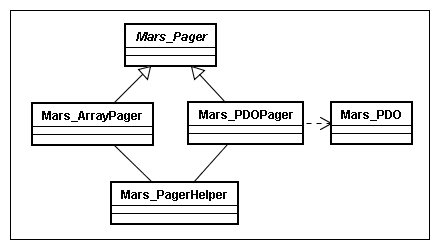
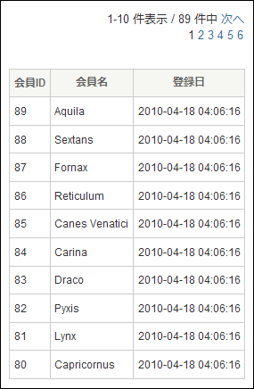

戻る
最終更新日: 2010 年 4 月30 日
このドキュメントは情報が整備されておらず、情報が古い可能性があります。ドキュメントは新しく書き換える予定です。
ページャの概要
検索結果などの大量のデータを複数のページにわたって表示したい場合は、ページャ機能を使います。delta が提供するページャには、データベース (PDO) から取得したデータをページ分割する Delta_DatabasePager と、配列から構成されたデータをページ分割する Delta_ArrayPager があります。これらのクラスはページャの基本機能を持つ Delta_Pager 抽象クラスから派生しているため、殆どのメソッドは同じように使うことができます。また、分割されたデータをビュー上で表示するには、Delta_Pager::assivnView() メソッドでページャヘルパ (Delta_PagerHelper) をビューに割り当てる必要があります。

Delta_Pager API ガイド
Delta_Pager クラスの代表的なメソッドを紹介します。詳しくは  Delta_Pager リファレンスを参照して下さい。
Delta_Pager リファレンスを参照して下さい。
- __construct()
- setPageLimit()
- getRecordSet()
- addQueryData()
- setQueryDataFromForm()
- setActionName()
- assignView()
public function __construct()
コンストラクタ。
- PHP Code#
// Delta_DatabasePager のインスタンスを生成
$pager = Delta_DatabasePager::getInstance();
// Delta_ArrayPager のインスタンスを生成
$pager = Delta_ArrayPager::getInstance();
public function setPageLimit($pageLimit, $adjustCount = FALSE)
表示する最大ページ数に制限を設定します。
このメソッドは、fetch() メソッドを実行するよりも前にコールする必要があります。
- PHP Code#
// データ件数が 10 ページ以上にわたる場合も表示は 10 ページまでとする (データ総件数は実件数を表示)
$pager->setPageLimit(10);
adjustCount を TRUE に設定した場合、データの総件数表示は「1 ページ当たりの表示件数×pageLimit」となります。ページ数が pageLimit に満たない場合は実レコード数が表示されます。また、ユーザが故意に pageLimit 以降のページを GET パラメータに指定した場合は、ページ指定が不正となり強制的に 1 ページ目が表示されます。
public function getRecordSet()
現在のページに割り当てられているレコードセットを取得します。
- PHP Code#
$recordSet = $pager->getRecordSet();
// ページャから取得したレコードセットにデータを追加
mt_srand();
foreach ($recordSet as $index => &$record) {
$record['rand'] = mt_rand();
}
// レコードセットをページャに再セット
$pager->setRecordSet($recordSet);
public function addQueryData($name, $value = NULL)
ナビゲーションリンク (「次ページ」や「前ページ」へのリンク) にクエリパラメータを追加します。
- PHP Code#
$pager->addQueryData('foo', '100');
$pager->addQueryData('bar', ''); // value が NULL、または空文字の場合はクエリを追加しない
$pager->addQueryData('baz', array('1', '2', '3')); チェックボックスのように 1 つのフィールドに複数の値を保持する形式も指定可能
上記のようなクエリパラメータを追加した場合、ビューからヘルパを介して「次ページ」へのリンクを生成すると次のようなパスが出力されます。
- View Code#
<a href="<?php echo $pager->getNextPagePath() ?>">次へ</a>- HTML Code#
# "%5B1%5D" は配列表記を URL エンコードした形式
<a href="/searchList.do/page/2/foo/100/baz%5B0%5D/1/baz%5B1%5D/2/baz%5B2%5D/3">次へ</a>
public function setQueryDataFromForm()
ナビゲーションリンクのクエリパラメータに、フォームから取得した全ての値を追加します。
- PHP Code#
// $form->getFields() のデータが array('foo' => '100, 'bar' => '200', 'baz' => '300') の場合
// フォームから取得した全ての値を再セット
$pager->addQueryData('foo', '100);
$pager->addQueryData('bar', '200);
$pager->addQueryData('baz', '300);
// 上記のコードは次のコードに置き換えられる
$pager->addQueryDataFromForm();
public function setActionName($actionName)
ナビゲーションリンク用の基底アクションを設定します。基底アクションが未設定の場合は、最後に実行されたアクションがパスに用いられます。
- PHP Code#
$pager->setActionName('SearchResult');
上記のコードで基底アクションは SearchResult に設定されます。ビュー上のパスがどのように表示されるか見てみましょう。
- View Code#
<a href="<?php echo $pager->buildPath(2) ?>">2 ページを開く</a>
Delta_PagerHelper::buildPath() メソッドは、指定されたページナンバーを元にリンクパスを生成します。
- HTML Code#
<a href="/searchResult.do/page/2">2 ページを開く</a>
アクション名が camelCaps + 拡張子を追加した形でパスに用いられていることが分かります。
public function assignView()
ページ分割したレコードセットをビューから参照できるようページャヘルパを割り当てます。
このメソッドは、ページャの最後の処理 (通常は fetch() メソッドより後) としてコールする必要があります。
- PHP Code#
$pager->assivnView();
assignVIew() メソッドを実行することにより、ビューからは $pager を通してレコードセットにアクセスすることが出来るようになります。ヘルパの詳しい使用方法については Delta_PagerHelper の API を参照して下さい。
ビューに割り当てられる変数名は global_helpers.yml (helpers.yml) で変更可能です。
Delta_DatabasePager API ガイド
Delta_DatabasePager クラスの代表的なメソッドを紹介します。詳しくは  Delta_DatabasePager リファレンスを参照して下さい。
Delta_DatabasePager リファレンスを参照して下さい。
public function setFetchMode($fetchMode, $fetchIndex = 0)
レコードセットに含むデータの形式を設定します。フェッチモードが未設定の場合は、PDO::FETCH_BOTH が適用されます。
このメソッドは fetch() または fetchStatement() メソッドを実行するよりも先にコールする必要があります。
- PHP Code#
$pager->setFetchMode(PDO::FETCH_NUM); // 0 から始まるカラム番号を添字とした配列で返す
$pager->setFetchMode(PDO::FETCH_BOTH); // 0 から始まるカラム番号とカラム名で構成された配列を返す
setFetchMode() メソッドに指定可能な定数は  PDOStatement::fetch() のマニュアルを参照して下さい。
PDOStatement::fetch() のマニュアルを参照して下さい。
public function setOptimizerHint($optimizerHint, $hintValue = NULL)
クエリを発行する際にオプティマイザへヒントを与えます。データ構成や環境によってはパフォーマンスが向上する可能性があります。
このメソッドは fetch() または fetchStatement() メソッドを実行するよりも先にコールする必要があります。
- PHP Code#
// レコード総数を取得する際に MySQL の FOUND_ROWS() 関数を使用する
$pager->setOptimizerHint(Delta_DatabasePager::HINT_MYSQL_FOUND_ROWS);
// レコード総数を取得する際の SELECT クエリを指定
$pager->setOptimizerHint(Delta_DatabasePager::HINT_SELECT_COUNT_SQL, 'SELECT COUNT(member_id)');
HINT_MYSQL_FOUND_ROWS と HINT_SELECT_COUNT_SQL を同時に指定することはできません。
public function addSort($column, $type = Delta_Pager::SORT_ASCENDING, $priority = NULL)
column キーによるソートを追加します。リクエストパラメータに含まれるソート指定は、addSort() の指定よりも優先されます。
このメソッドは fetch() または fetchStatement() メソッドを実行するよりも先にコールする必要があります。
- PHP Code#
// member_name カラムによる降順ソートを追加
$pager->addSort('member_name', Delta_Pager::SORT_DESCENDING);
// register_date カラムによる昇順ソートを追加
$pager->addSort('register_date');
ソートカラムは addSort() メソッドを通して複数指定可能です。上記のような指定の場合、実際に発行されるソートクエリは "ORDER BY member_name DESC, register_date ASC" のようになります。(MySQL の場合)
ヘルパを使うことで、ユーザがページ上からソートしたい項目を指定して並び替えるといった実装が可能になります。ユーザが指定したソートはリクエストパラメータに付加されますが、ページャに addSort() の指定がある場合は、リクエストパラメータに付加されているソートが優先されます。例えば addSort() で member_name を降順ソートした状態で、ユーザが member_id による昇順ソート指定を行った場合、発行されるクエリは "ORDER BY member_id ASC, member_name DESC" となります。
public function fetch($preparedStatement, $pageInRecord = 10)
プリペアードステートメントを発行してデータセットを取得します。取得したデータは getRecordSet() メソッドで取得可能です。
- PHP Code# libs/dao/MembersDAO.php
public function findAllToPager($statusType)
{
$conn = $this->getConnection();
$sql = 'SELECT member_id, member_name, register_date '
.'FROM members '
.'WHERE status_type = :status_type';
$pstmt = $conn->prepare($sql);
$pstmt->bindParam(':status_type', $statusType);
// $pstmt->execute(); // execute() は実行しない
$pager = Delta_DatabasePager::getInstance();
$pager->fetch($pstmt);
return $pager;
}
- PHP Code# modules/{module}/actions/MemberSearchAction.php
public function execute()
{
$statusType = $this->getForm()->get('statusType');
$membersDAO = Delta_DAOFactory::create('Members');
$pager = $membersDAO->findAllToPager($statusType);
// array(array('member_id' => 1,
// 'member_name' => 'foo',
// 'register_date' => '2010-04-29 12:00:00'),
// array('member_id' => 2,
// 'member_name' => 'bar',
// 'register_date' => '2010-04-29 13:00:00'),
// array('member_id' => 3,
// 'member_name' => 'baz',
// 'register_date' => '2010-04-29 14:00:00'));
$recordSet = $pager->getRecordSet();
// ビューにヘルパを割り当てる
$pager->assignView();
return Delta_View::SUCCESS;
}
public function fetchStatement($connection, $statement, $pageInRecord = 10)
SQL ステートメントを発行してデータセットを取得します。取得したデータは getRecordSet() メソッドで取得可能です。
- PHP Code# libs/dao/MembersDAO.class.ohp
public function findAllToPager($statusType)
{
$conn = $this->getConnection();
$sql = 'SELECT member_id, member_name, register_date '
.'FROM members '
.'WHERE status_type = ' . $conn->quote($statusType);
$pager = Delta_DatabasePager::getInstance();
$pager->fetchStatement($conn, $sql);
return $pager;
}
Delta_ArrayPager API ガイド
Delta_ArrayPager クラスの代表的なメソッドを紹介します。詳しくは  Delta_ArrayPager リファレンスを参照して下さい。
Delta_ArrayPager リファレンスを参照して下さい。
public function fetch($recordSet, $pageInRecord = 10)
配列から構成されるレコードセットをページャに割り当てます。
- PHP Code#
public function execute()
{
$pager = Delta_ArrayPager::getInstance();
$recordSet = array();
$recordSet[0]['member_id'] = 1;
$recordSet[0]['member_name'] = 'foo';
$recordSet[0]['register_date'] = '2010-04-29 12:00:00';
$recordSet[1]['member_id'] = 2;
$recordSet[1]['member_name'] = 'bar';
$recordSet[1]['register_date'] = '2010-04-29 13:00:00';
$recordSet[2]['member_id'] = 3;
$recordSet[2]['member_name'] = 'baz';
$recordSet[2]['register_date'] = '2010-04-29 14:00:00';
$pager->fetch($recordSet);
// ビューにヘルパを割り当てる
$pager->assignView();
return Delta_View::SUCCESS;
}
public function setSort($key, $type = self::SORT_ASCENDING)
key によるソートを設定します。リクエストパラメータに含まれるソート指定は、addSort() の指定よりも優先されます
このメソッドは fetch() メソッドを実行するよりも先にコールする必要があります。
- PHP Code#
// member_id キーで昇順ソート
$pager->setSort('member_id', Delta_Pager::SORT_ASCENDING);
Delta_DatabasePager::addSort() メソッドと異なり、ソートキーを複数指定することはできません。
ビューからレコードセットを参照する
fetch() (または fetchStatement()) メソッドでレコードセットを取得した後、assignView() メソッドでビューにヘルパ ($pager) を割り当てることにより、ビューからはアクションや DAO クラスで生成したレコードセットを参照できるようになります。
次のコードはレコードセットをページ分割して表示するためのサンプルです。$pager には Delta_PagerHelper クラスのインスタンスが格納されています。
- View Code#
<?php if ($pager->hasRecord()): ?>
<p><?php echo $pager->getNavigationLabel() ?></p>
<table>
<tr>
<th>会員ID</th>
<th>会員名</th>
<th>登録日</th>
</tr>
<?php while ($current = $pager->next()): ?>
<tr>
<td><?php echo $current['member_id'] ?></td>
<td><?php echo $current['member_name'] ?></td>
<td><?php echo $current['register_date'] ?></td>
</tr>
<?php endwhile; ?>
</table>
<?php endif; ?>
Delta_PagerHelper::getNavigationLabel() メソッドは、データセットの総件数表示や次ページへのリンクといったナビゲーション用の HTML 一式を生成します。ナビゲーションラベルのフォーマットは global_helpers.yml (helpers.yml) を書き換えることで自由にカスタマイズすることができます。
ヘルパには他にも、各列名の右横にソート用リンクを追加して、ユーザがリンク押下時に対象カラムでソートするといった機能も備わっています。ヘルパに関する詳しい使用方法については Delta_PagerHelper の API を参照して下さい。
